愛。 |
それは、この世でいちばん大切なもの。 |
愛。 |
そう、愛こそがすべて。 |
というわけで、このたびUNDERTALE/DELTARUNE通信編集社は、愛するファンのみなさんのために、スペシャルな企画をご用意しました… |
メルマガ読者のみなさん全員に、バレンタインカードを3枚プレゼントします！ハッピーバレンタイーーーン！！ |
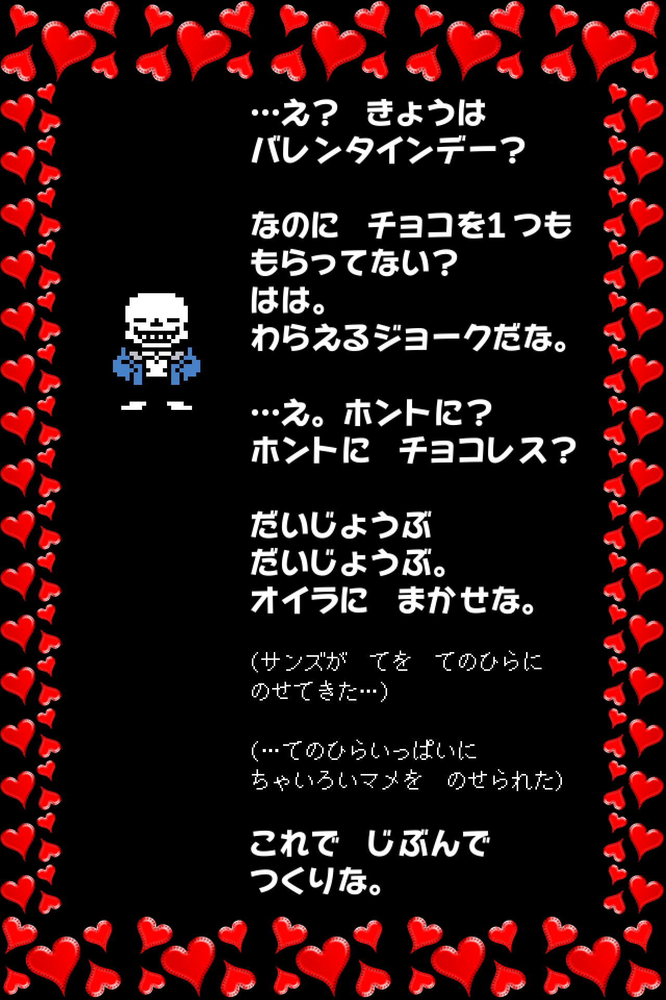 |
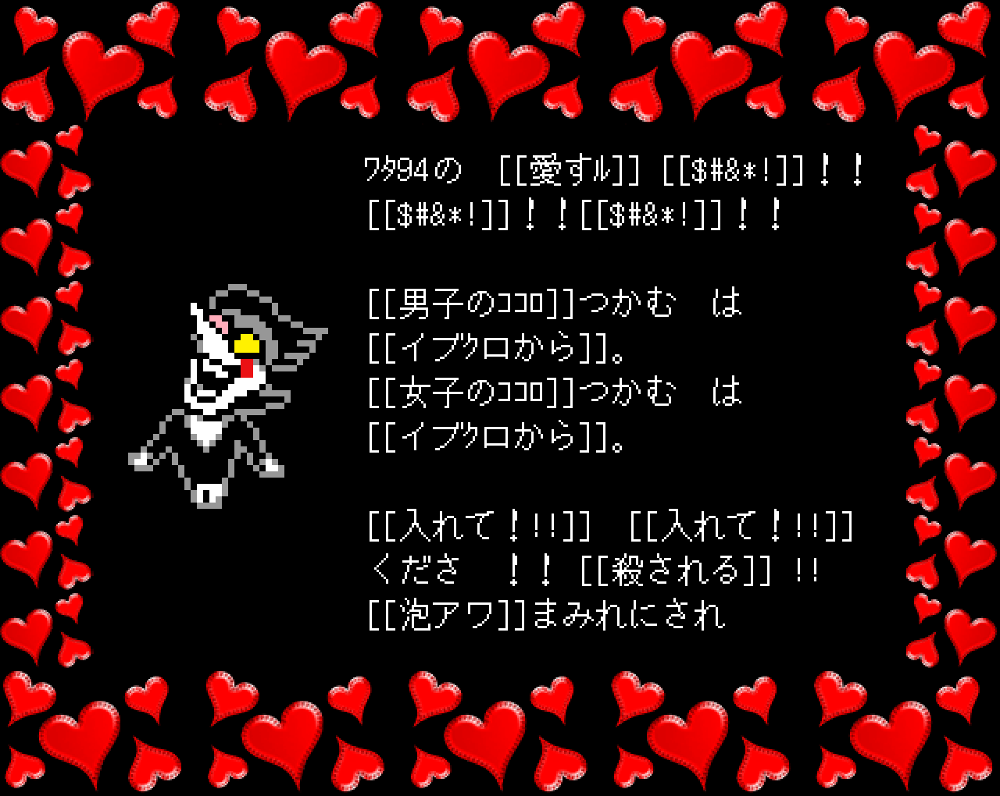 |
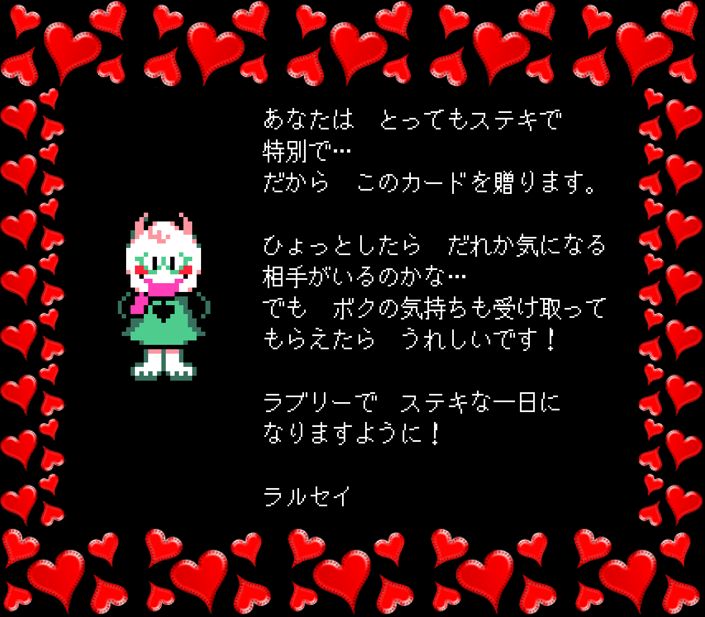 |
どうですか？気に入ってもらえましたか？でも、あなたの手元に届いたのは、ほんの一部にすぎません。全部で50種類近くあるので。 |
というわけで、お友だちとトレードして、全種類コンプリートしてくださいね！ |
…ただし、ズルしようとしてもムダですよ？ |
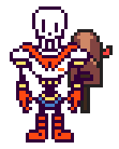 |
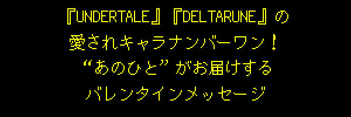 |
バレンタインカードを受け取ったあなたはいまごろ、うれしすぎて心臓が体から飛び出して、緑色の四角い枠っぽいものの中を動き回らんばかりでしょう。 |
…でも、そうじゃない人もいるはず（たとえば、「マニアックコース」以外の人とか）。そんなあなたをラブラブフィーバーモードにするには、もうひと押し必要ですね。 |
というわけで、ここで秘密兵器の登場です！愛のマエストロ、誰もが思わず抱きしめたくなる“あのひと”、強引にでもあなたに結婚指輪を贈り、そのハートをものにしてしまう… みんなのヒーローから、じきじきにスペシャルなメッセージが届いています！ |
それでは、どうぞ！ |
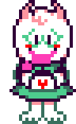 |
みなさん、2024年も、どうぞよろしくお願いします！DELTARUNE開発チーム（と僕）は、年末年始は休みを取って、それぞれ帰省したりしてのんびり過ごしました。今はもうみんなもどってきて、制作再開に向けてやる気まんまんです。 |
Chapter 3は今、日本語ローカライズに取り組んでいるところです。それがすんだら、各プラットフォームへの移植作業とバグテストを始めて、それもすんだら…ついに完成です！ |
前回少しお話したとおり、今はおもにChapter 4の制作に力を入れていて、Chapter 5の内容にも少し着手しています。Chapter 4に関しては、チーム内で完成までの制作タイムテーブルを設定しました。新しく加わってくれたプロデューサーが、スケジュールどおり順調に作業が進むようにサポートしてくれるので、今年はかなり生産的な年になる予感がしてます！ |
そんな感じで、ネタバレせずに話せることは今回もあまりないので、今日のところはこちらのカップでもご覧ください。 |
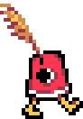 |
イラストレーターのSaffronscarfから聞いたんですけど、去年は卯年で、今年は辰年で、つまりウサギとドラゴンはお隣どうしなんですね。それってなんか…ロマンチックじゃありません！？というわけで、Saffronscarfがこんなコミックを描いてくれました。 |
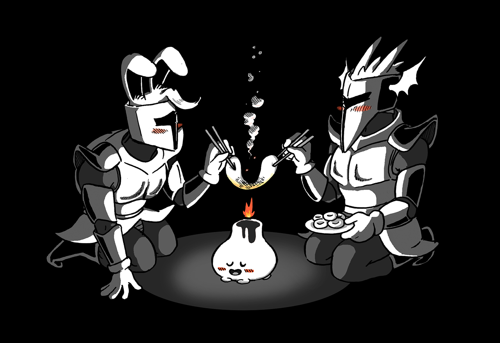 |
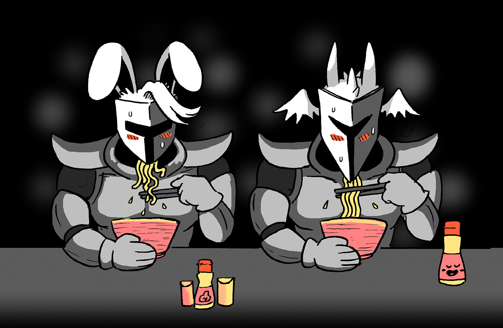 |
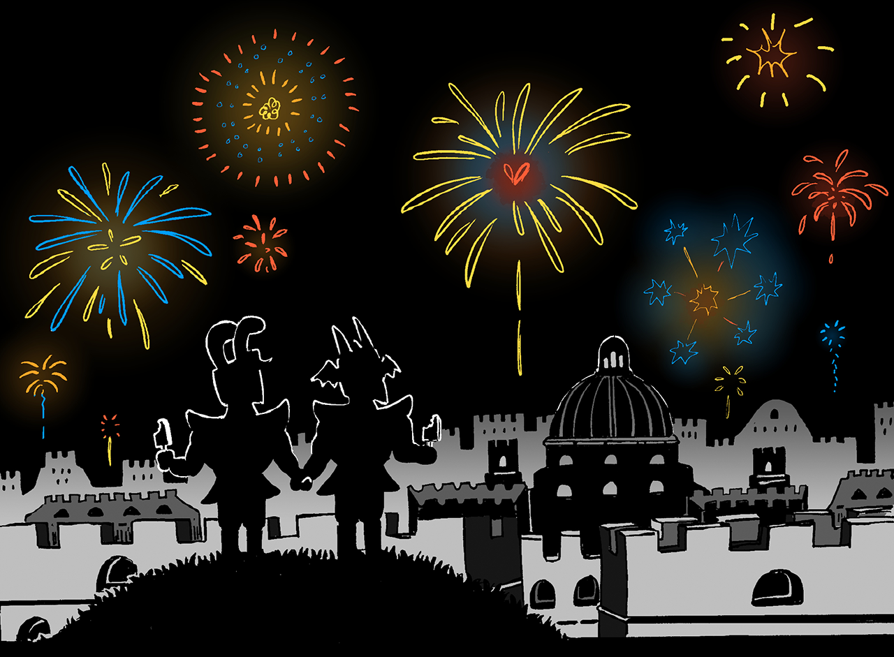 |
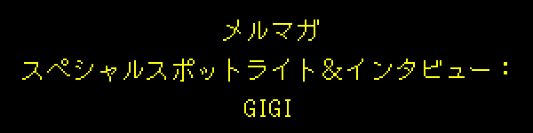 |
今季号のスペシャルインタビューは、スペシャルな友だち…Gigiです！！ |
『UNDERTALE』の制作当時からコンセプトアートを描いてくれている、色彩とファッションのセンスが天才的な、すばらしいアーティストです。すでにリリースされているものの中では、クリスとスージィの闇の世界のコスチュームとか、Chapter 2の背景コンセプトアートなんかが特に目を引きますけど、この先のチャプターでもたくさんデザインを手掛けてくれているので、みなさんも楽しみにしていてください！ |
そんなGigiのインタビュー、さっそくどうぞ！ |
みなさんの耳にも入っているかもしれませんが…最近僕は、とあるゲームのBGMを制作しました… |
そう、あのゲームです… しかも、予定外の、意外なコラボレーションでした… |
そのゲームとは… |
Gigiの新作ビジュアルノベル、『SOUL OF SOVEREIGNTY』のサウンドトラックを、Gigiと共作しました！！ |
最初の章はもうリリースされていて、ネットで買えます。分岐のないストーリーで、1～2時間で終わるので、ぜひチェックしてみてください！ |
（ただし、大人向けの内容なので、18歳未満の方はご遠慮くださいね） |
さっきも言いましたけど、このサウンドトラックはGigiとコラボして作りました。それぞれ単独で作った曲もいくつかあるけど、大半の曲は、プロジェクトファイルをやりとりしながら作っていったものです。なので、2人の力がちょうど半分ずつぐらい（か、Gigiが60で僕が40ぐらい）合わさってできた感じです。Gigiからは「PlayStationのゲームっぽいサントラにしたい」というリクエストがあったので、僕がふだん使ってるサウンドのサンプルを全部送って、2人とも思いっきり好きなように作りました。こんなふうにひんぱんにファイルをやりとりしながら共作したのは初めてだったので、すごく楽しかったです。しかも、Gigiのコンポーザーデビュー作ですからね！Gigiに拍手を送ります！ |
『SOUL OF SOVEREIGNTY』は、『DELTARUNE』よりもっとシリアスなファンタジー系の作品なんですが、キャラクターの魅力は共通するような気がします。『DELTARUNE』みたいに、登場人物たちにも設定にも深い経歴があって、それはGigiが10年以上温めてきたものなんです。だから、うまく言葉にするのは難しいんですけど、プレイすれば、自然と感じ取ることができます。作品の中でLoicとYsmeに出会うと、すぐに昔から知ってる友だちみたいに思えてくるはず。そうなったらもう、彼らのことが頭から離れなくなります。僕はもう、早く彼らに再会したくてたまりません。 |
そんなわけで、魔法とファンタジーの世界と、ほんのちょっぴり“ピエロの女の人”の要素に興味がある人には、心からオススメですよ。 |
あ、サウンドトラックもぜひ、聴いてくださいね！ |
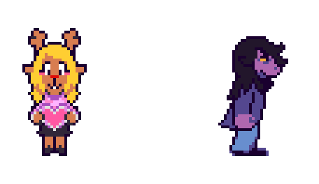 |
ホンモノです |
「マニアックコース」の人には、「トリエルを足にはいてください」って言いたいんですけど…それ以外の人たちはヘンに思うだろうから、やめておきますね（…といっても、他に言うこともないですけど）。 |
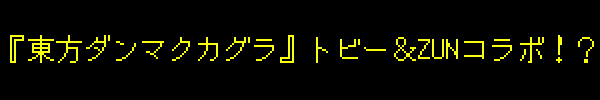 |
もうご存じかもしれないですが、『東方Project』のクリエイターZUNさんと僕がコラボして作った曲が、ついにリリースされました！！ |
これ、僕にとっては夢みたいな出来事なので、ぜひ聴いてください！！ |
それから、この曲のカバーアートをテミーが描いてくれました！ちなみに、今回のメルマガに載ってるスプライトも全部、テミーの作品ですよ。テミー、いつもありがとう！ |
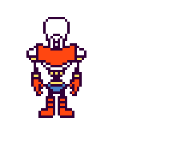 |
史上最高の（って言っちゃってもいい気がする）アイススケーター、羽生結弦さんが… |
…ご自身のアイスショーで、「MEGALOVANIA」に合わせてスケートしてくれてます！！ |
どういうことかくわしく説明すると…羽生結弦さんは今、"RE_PRAY"というアイスショーの単独公演を行っているところなんです。この公演は、羽生さんご自身が好きなRPGに着想を得たストーリーになっていて、ご本人お気に入りのゲームの曲がたくさん使われてるんです（『エストポリス伝記II』の曲が出てきたときは、僕もめちゃくちゃアガりました）。ネタバレしたくないのであまりくわしくは言いませんが、ストーリーはちょっと『UNDERTALE』っぽくて、僕にはうれしいサプライズでした！ |
言うまでもなく、こんなイベントで僕の曲を使ってもらえるなんて、光栄の極みです。幸い、僕も公演を会場で観ることができたんですが、とにかくすばらしくて、生涯忘れられない体験になりました。羽生さんが客席のほうを向いてくれたときは、思わず歓声を上げて、自分がクマのプーさんになったみたいな気持ちになりました。 |
それから…自分で言うのはダサいかもしれないけど、羽生さんには、公演の前にこんなお花を贈りました… |
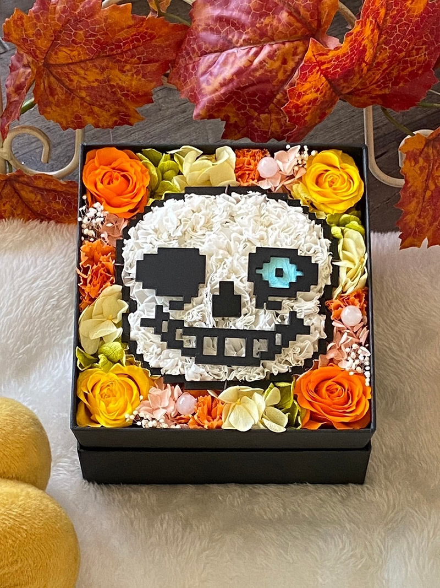 |
＊ (この おはなを みて ケツイが みなぎった) |
羽生さんの"RE_PRAY"公演の様子をどこかで観られるときには、みなさんにもお知らせしますね！ |
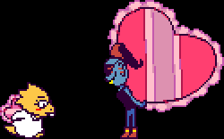 |
{kind=link}
 |
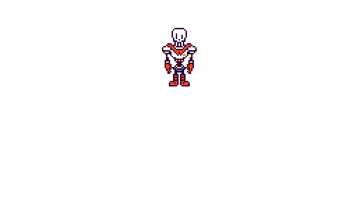 |
こんなラブラブなメルマガを読み終わって、みなさんの心臓は今、ドキドキしたりバクバクしたり、ピコピコいったり…お医者さんに診てもらったほうがよさそうなヘンな音がしてることでしょう。でも、最後にもう1つだけ… |
これ、今年のハチノヨンさんの年賀状です。テミーがイラストを描きました！ |
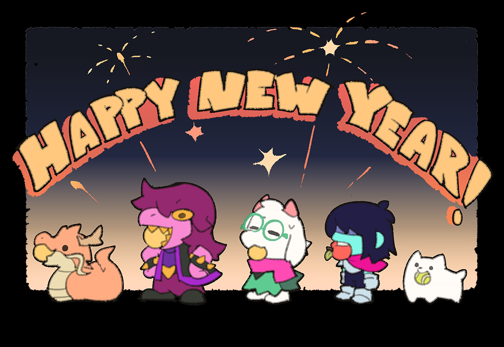 |
どう？かわいいでしょ？？ |
2024年がみなさんにとって、おめでたい一年になりますように！ハッピー・イヤー・オブ・ザ・ドラゴン！ |
それじゃ、また！ |
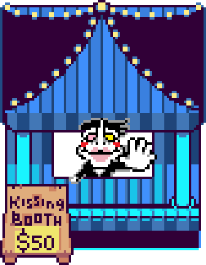 |